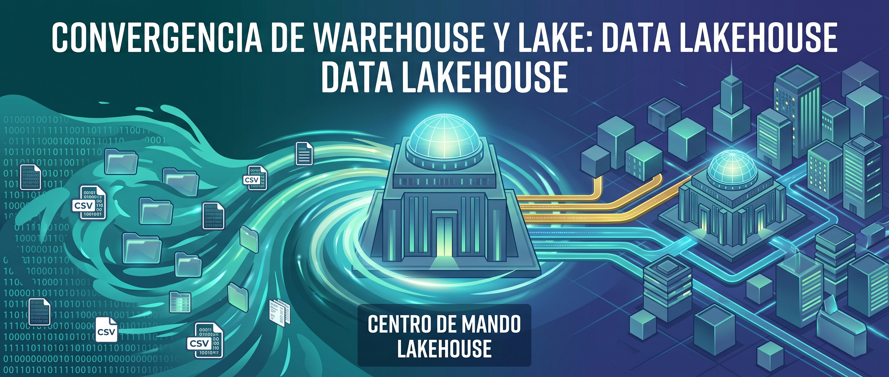
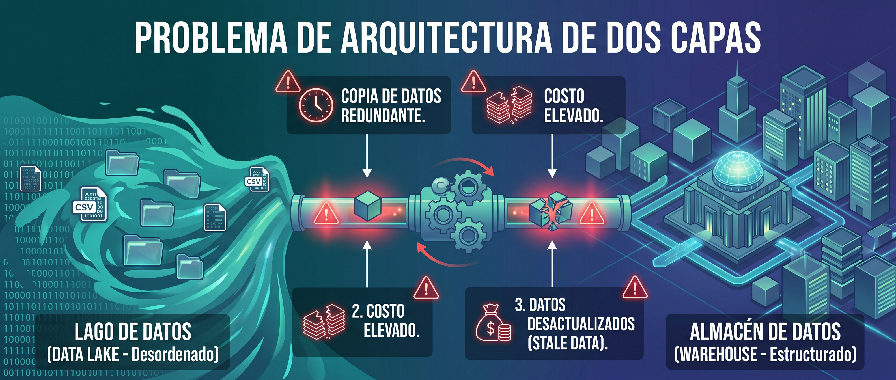
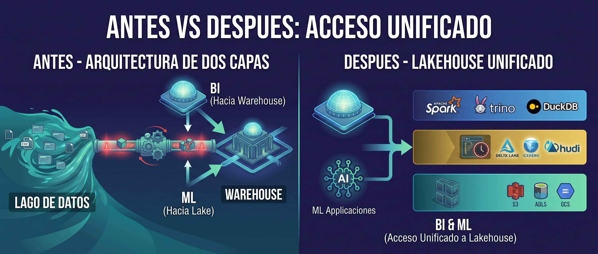
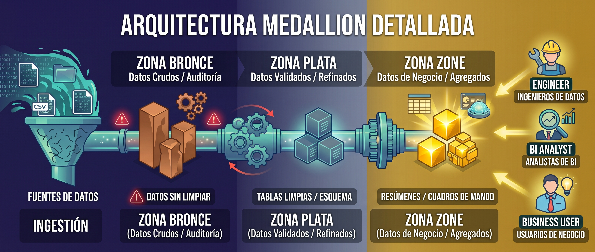

Lakehouse#

Contexto historico#
Durante la decada de 2010, la arquitectura dominante en empresas grandes era la arquitectura de dos capas: un Data Lake para almacenar todo crudo a bajo costo, y un Data Warehouse separado para hacer BI y reportes.

El flujo era:
Fuentes ──► Data Lake (crudo, S3) ──► ETL ──► Data Warehouse (limpio, Snowflake)
│ │
└──► ML (sobre datos crudos) └──► BI (reportes, dashboards)
Esto funcionaba pero tenia problemas serios:
Problema |
Consecuencia |
|---|---|
Copia de datos |
Los mismos datos existen en dos lugares (Lake y Warehouse), duplicando el costo de almacenamiento |
Datos desincronizados |
El ETL entre Lake y Warehouse tiene latencia. El dashboard puede mostrar datos de ayer mientras el modelo de ML usa datos de hoy |
Doble mantenimiento |
Dos sistemas para administrar, dos equipos, dos presupuestos, dos sets de permisos |
ML aislado |
Los cientificos de datos trabajan sobre el Lake con datos crudos, los analistas de BI sobre el Warehouse con datos limpios. Ven datos diferentes |
Costo compuesto |
Pagas almacenamiento en el Lake Y licencias del Warehouse Y computo del ETL que mueve datos entre ellos |
Latencia |
Agregar una fuente nueva requiere configurar la ingesta al Lake, luego el ETL al Warehouse. Semanas de trabajo |
En 2020, Databricks publico el paper «Lakehouse: A New Generation of Open Platforms» proponiendo eliminar la segunda capa: poner las capacidades del Warehouse directamente sobre el almacenamiento barato del Lake.
Que es un Lakehouse#
Un Lakehouse es una arquitectura que combina:
Almacenamiento del Data Lake: archivos Parquet en almacenamiento de objetos (S3, ADLS, GCS), barato y escalable
Capacidades del Data Warehouse: esquema, transacciones ACID, SQL rapido, governance, indices
La clave es una capa de metadata (implementada por Delta Lake, Apache Iceberg o Apache Hudi) que se sienta sobre los archivos y les agrega las capacidades que el Lake no tenia.
Caracteristica |
Warehouse |
Lake |
Lakehouse |
|---|---|---|---|
Almacenamiento |
Propietario, caro |
Objetos, barato |
Objetos, barato |
Esquema |
Obligatorio (write) |
No tiene |
Opcional, enforceable |
Transacciones ACID |
Si |
No |
Si |
Tipos de dato |
Solo estructurado |
Todos |
Todos |
SQL |
Nativo, rapido |
Lento o limitado |
Nativo sobre archivos |
Machine Learning |
Hay que sacar los datos |
Directo sobre raw |
Directo, mismos datos que BI |
Time travel |
No (en la mayoria) |
No |
Si |
Costo |
Alto |
Bajo |
Bajo-Medio |
Copia de datos |
N/A |
Hay que copiar al Warehouse |
No se copia |
Gobernanza |
Integrada |
Manual o inexistente |
Integrada via metadata |
Arquitectura#
El Lakehouse tiene tres capas, cada una con una responsabilidad clara:
<img src=»../../_static/images/lh_arquitectura_3_capas.jpg>
Capa 1: Almacenamiento (la base)#
Archivos en almacenamiento de objetos. Es identico a un Data Lake: S3, ADLS, GCS, MinIO. Los datos viven como archivos Parquet organizados en carpetas. Barato, duradero, escalable.
s3://mi-lakehouse/
├── bronze/
│ ├── ventas/
│ ├── logs/
│ └── apis/
├── silver/
│ ├── ventas_limpias/
│ └── logs_parseados/
└── gold/
├── dashboard_ventas/
└── kpis/
Esta capa no sabe nada de esquemas ni transacciones. Solo guarda archivos.
Capa 2: Metadata (el cerebro)#
Es lo que convierte un Lake en un Lakehouse. Una capa de software que agrega:
Capacidad |
Que hace |
Como funciona |
|---|---|---|
Esquema |
Define que columnas y tipos tiene cada tabla |
Metadata en JSON junto a los archivos Parquet |
Transacciones ACID |
Garantiza que las escrituras son atomicas |
Log de transacciones (_delta_log, metadata/) |
Time travel |
Permite leer versiones anteriores de una tabla |
Cada operacion crea una version numerada |
Schema enforcement |
Rechaza datos que no cumplen el esquema |
Valida contra el esquema antes de escribir |
Particionamiento |
Organiza datos en subcarpetas por columna |
Metadata track de que particiones existen |
Estadisticas |
Min/max por columna por archivo |
Permite saltar archivos que no tienen datos relevantes (data skipping) |
Merge/Upsert |
Actualizar registros existentes |
Lee, modifica en memoria, escribe nuevos archivos |
Linaje |
Rastrea de donde vino cada dato |
Historial de operaciones en el log |
Las tres implementaciones principales de esta capa son:
Tecnologia |
Creador |
Fortaleza |
|---|---|---|
Delta Lake |
Databricks |
La mas popular. Madura, gran comunidad, integracion con Spark |
Apache Iceberg |
Netflix → Apache |
Mejor rendimiento en tablas muy grandes. Soporte multi-motor (Spark, Trino, Flink) |
Apache Hudi |
Uber → Apache |
Optimizado para upserts y datos en streaming |
Las tres resuelven el mismo problema fundamental con enfoques ligeramente distintos. En la practica, Delta Lake domina por su asociacion con Databricks y Spark.
Capa 3: Consulta (la interfaz)#
Los motores que leen y procesan los datos a traves de la capa de metadata:
Motor |
Tipo |
Nota |
|---|---|---|
Apache Spark |
Distribuido |
El mas usado. Escala a petabytes. Python (PySpark), Scala, SQL |
Trino (ex-Presto) |
SQL distribuido |
Consultas SQL interactivas sobre el Lake. Creado por Facebook |
DuckDB |
Embebido |
Motor analitico en un solo proceso. Ideal para desarrollo local |
Dremio |
SQL federado |
Motor SQL que conecta multiples fuentes incluyendo Lakes |
Databricks SQL |
Serverless |
SQL warehouse en la nube sobre Delta Lake |
El problema que resuelve: unificacion#
Antes (dos sistemas)#
┌─────────────────┐
Fuentes ──► Lake ──►│ ETL pesado │──► Warehouse ──► BI (dashboards)
│ │ (copia datos) │
│ └─────────────────┘
│
└──► ML (datos crudos, posiblemente distintos a los de BI)
Problemas:
BI y ML ven datos diferentes
Cambiar un esquema requiere actualizar Lake, ETL y Warehouse
Un dato tarda horas en ir de la fuente al dashboard
Despues (Lakehouse)#
┌─────────────────────────┐
Fuentes ──► Lake ──►│ Capa de metadata │──► BI (SQL directo sobre archivos)
│ (Delta/Iceberg/Hudi) │
│ │──► ML (mismos datos, misma tabla)
│ Sin copiar datos │
└─────────────────────────┘
Ventajas:
BI y ML ven exactamente los mismos datos
Un solo esquema, un solo set de permisos
Los datos estan disponibles en minutos, no horas
No hay ETL de copia entre Lake y Warehouse

Capacidades clave#
1. SQL sobre archivos#
Con un Lakehouse, puedes hacer consultas SQL directamente sobre archivos Parquet almacenados en S3 o Azure Blob, con rendimiento comparable a un Warehouse:
-- Esto corre sobre archivos Parquet en S3, no sobre una base de datos
SELECT
region,
producto,
SUM(ingreso) AS ingreso_total,
COUNT(*) AS transacciones
FROM silver.ventas
WHERE fecha >= '2024-01-01'
GROUP BY region, producto
ORDER BY ingreso_total DESC;
El truco esta en las estadisticas a nivel de archivo: la capa de metadata sabe que el archivo part-00003.parquet solo tiene datos de la region «Cali» con fechas de marzo. Si tu query filtra por region = «Bogota» y fecha en junio, ese archivo se salta completamente. Esto se llama data skipping y es lo que hace que las consultas sobre archivos sean rapidas.
2. BI y ML unificados#
En dos capas |
En Lakehouse |
|---|---|
El analista de BI ve la tabla |
El analista ve |
El cientifico de datos ve |
El cientifico ve la misma |
Si el ETL tiene un bug, las tablas muestran datos distintos |
Los dos ven la misma tabla, siempre consistente |
3. Streaming + Batch unificados#
Un Lakehouse puede recibir datos en batch (archivos cada hora) y en streaming (eventos en tiempo real) en la misma tabla:
Fuente batch (CSV diario) ──┐
├──► Tabla Delta ──► Dashboard actualizado
Fuente streaming (Kafka) ──┘ en minutos
Con la arquitectura de dos capas, el streaming iba por un lado (Kafka → base de datos operacional) y el batch por otro (archivos → Lake → Warehouse). Dos pipelines, dos sistemas, dos verdades.
4. Gobernanza integrada#
La capa de metadata permite controlar:
Aspecto |
Como funciona |
|---|---|
Permisos |
Control de acceso a nivel de tabla, columna o fila |
Auditoria |
Historial de quien leyo o modifico cada tabla |
Linaje |
De donde vino cada columna, por que transformaciones paso |
Calidad |
Validaciones automaticas al escribir (expectations) |
Catalogo |
Registro centralizado de todas las tablas con descripcion |
Medallion Architecture en el Lakehouse#
La organizacion en zonas Bronze/Silver/Gold que vimos en el Data Lake se formaliza en el Lakehouse como la Medallion Architecture:

Capa |
Formato |
Esquema |
Calidad |
Quien la usa |
|---|---|---|---|---|
Bronze |
Parquet/Delta (append only) |
Schema-on-Read |
Crudo, sin validar |
Ingenieros de datos |
Silver |
Delta (con schema enforcement) |
Esquema definido |
Limpio, tipado, validado |
Analistas, cientificos |
Gold |
Delta (modelado dimensional) |
Estrella o desnormalizado |
Agregado, listo para consumo |
Negocio, dashboards |
La diferencia con un Lake puro: en el Lakehouse, cada capa es una tabla Delta (o Iceberg), no solo carpetas con archivos. Eso significa que cada capa tiene esquema, versionado y ACID.
Implementaciones comerciales#
Plataforma |
Capa metadata |
Motor |
Nota |
|---|---|---|---|
Databricks |
Delta Lake |
Spark |
El creador del concepto. La plataforma mas completa |
AWS (Lake Formation + Athena) |
Iceberg/Delta |
Athena, EMR |
Serverless SQL sobre S3 |
Azure (Synapse + Fabric) |
Delta Lake |
Synapse Spark |
Integrado con Power BI. Microsoft Fabric es la version nueva |
Google (BigLake) |
Iceberg |
BigQuery |
Unifica BigQuery con archivos en GCS |
Snowflake |
Iceberg |
Snowflake |
Originalmente solo Warehouse, ahora soporta Lakehouse con Iceberg |
Dremio |
Iceberg |
Dremio |
Open source, motor SQL sobre el Lake |
StarRocks |
Iceberg/Delta/Hudi |
StarRocks |
Motor analitico de alto rendimiento |
Para aprendizaje y desarrollo local#
Herramienta |
Lo que necesitas |
|---|---|
PySpark + Delta Lake |
|
DuckDB + Delta |
|
Polars + Delta |
|
Carpeta local |
Parquet en carpetas Bronze/Silver/Gold. Sin ACID pero sirve para aprender la estructura |
Ventajas y desventajas#
Ventajas |
Desventajas |
|---|---|
Costo de Lake + confiabilidad de Warehouse |
Mas complejo de configurar que un Warehouse puro |
BI y ML sobre los mismos datos sin copiar |
Requiere Spark u otro motor para consultas grandes |
SQL rapido sobre archivos gracias a metadata |
Tecnologia relativamente nueva (Delta 2019, Iceberg 2020) |
Open source en su mayoria (Delta, Iceberg, Hudi) |
Rendimiento de SQL depende de la optimizacion (particiones, estadisticas) |
Escala a petabytes sobre almacenamiento barato |
Menos herramientas de BI estan integradas directamente (vs Snowflake que tiene ecosistema maduro) |
Gobernanza integrada (permisos, auditoria, linaje) |
Requiere equipo con conocimiento de infraestructura distribuida |
Streaming + batch en la misma tabla |
El ecosistema esta fragmentado (Delta vs Iceberg vs Hudi) |
Cuando usar un Lakehouse#
Si:
Necesitas hacer BI (SQL, dashboards) y ML (modelos, features) sobre los mismos datos
Quieres eliminar la copia de datos entre Lake y Warehouse
El volumen es grande (terabytes+) y quieres almacenamiento barato
Necesitas transacciones ACID, time travel o control de esquema
Tu equipo tiene experiencia con Spark o esta dispuesto a aprenderlo
Estas empezando un proyecto nuevo y quieres una arquitectura moderna
No:
Solo necesitas BI simple y ya tienes un Warehouse funcionando (no vale la pena migrar)
El volumen es pequeno y cabe en PostgreSQL o BigQuery sin problema
No tienes equipo tecnico para administrar Spark y la capa de metadata
Tus datos son 100% estructurados y no necesitas ML (un Warehouse puro es mas simple)
Lakehouse vs cada alternativa#
vs Data Warehouse#
Warehouse |
Lakehouse |
|
|---|---|---|
Costo |
Alto |
Bajo (almacenamiento) + medio (computo) |
Datos no estructurados |
No soporta |
Si soporta |
ML |
Hay que exportar los datos |
Directo sobre las tablas |
Madurez |
30+ anos |
~5 anos |
Simplicidad |
Mas simple para BI puro |
Mas complejo de configurar |
Veredicto: si solo necesitas BI y el presupuesto no es problema, el Warehouse es mas simple. Si necesitas BI + ML o el costo importa, Lakehouse gana.
vs Data Lake#
Lake |
Lakehouse |
|
|---|---|---|
ACID |
No |
Si |
Esquema |
No tiene |
Enforceable |
SQL |
Lento, limitado |
Rapido con metadata |
Gobernanza |
Manual |
Integrada |
Costo |
Identico |
Identico (mismos archivos) |
Veredicto: un Lakehouse es un Lake con superpoderes. Si ya tienes un Lake, agregar Delta o Iceberg lo convierte en Lakehouse sin mover datos.